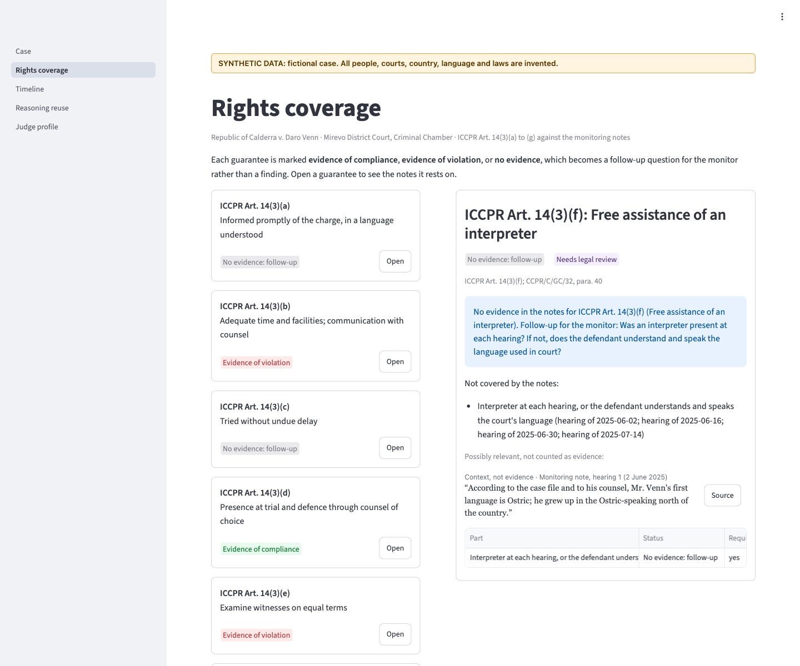

Module 1
Absence Detector
Which guarantees of ICCPR Art. 14(3)(a)–(g) have no evidence of compliance?
- What you see
- A rights coverage grid. Where the notes say nothing, Ratio gives a follow-up question for the monitor instead of a finding.
- In the demo case
- No note ever mentions an interpreter. Ratio does not invent a finding. It gives the monitor a follow-up question, and next to it a note it does not count as evidence: the defendant’s first language is Ostric.


(opens the full-size screenshot)